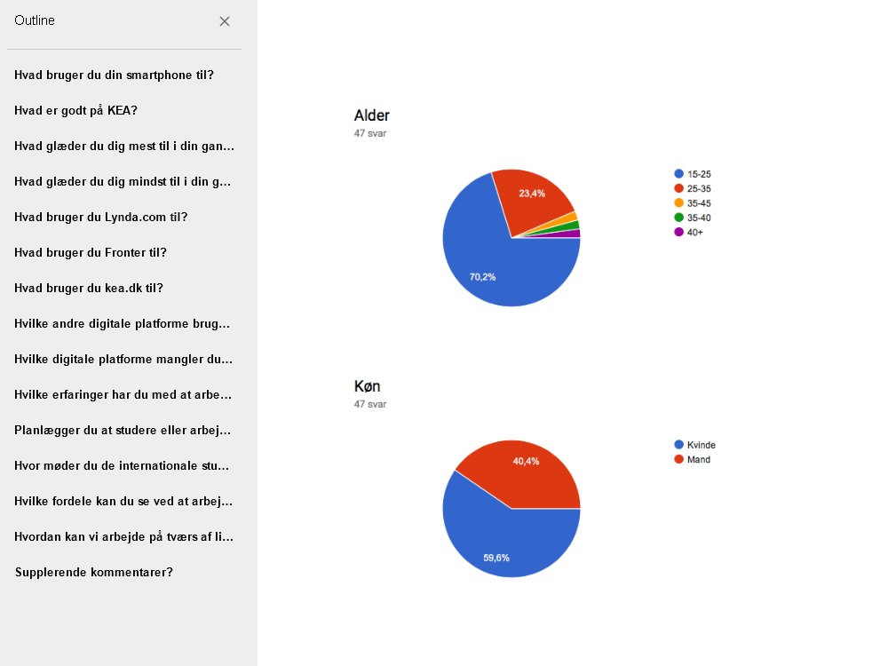
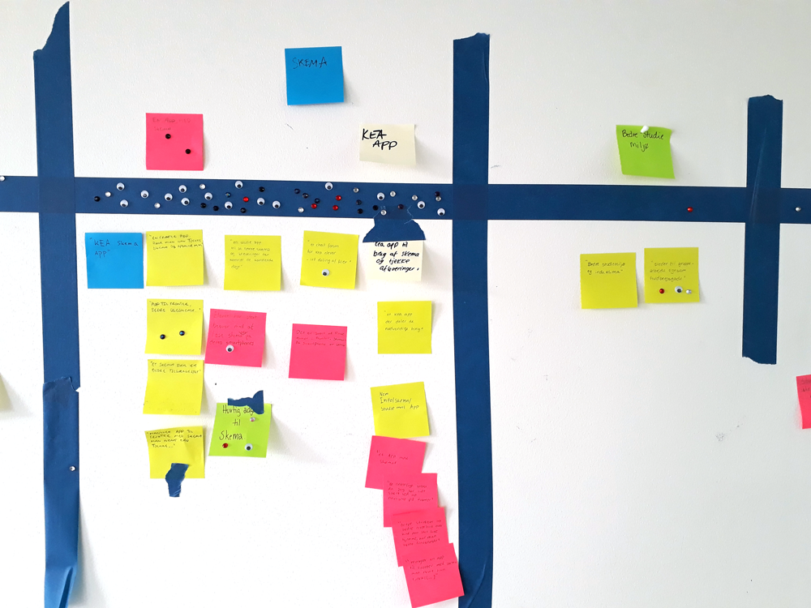
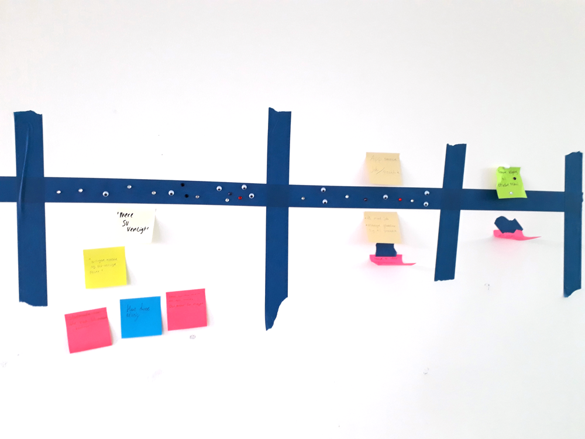
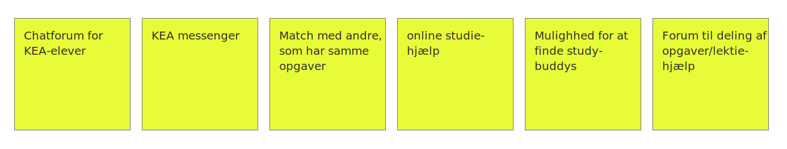

Kea-app
Oversigt:
- Link til GitHub-repository
- Brugerresearch
- Experience map
- Problemformulering
- Persona
- Storyboard
- Features og funktionaliteter
- Dokumentation af Design Charette
- Prototype
- XD prototype
- Test af prototype
- Præsentation af XD-prototype
Opgavebeskrivelse:
Målet med opgaven er at fremstille en prototype på en KEA-app, som kan øge samarbejdet og det sociale fællesskab mellem de danske og internationale multimediedesignstuderende, samt evt. at forbedre jobmulighederne efter endt uddannelse.
Derudover skal den være udstyret med én eller flere funktioner, som kan gøre dagligdagen lettere, eller have features, som kan gøre en forskel for de studerende.
Til at researche og udvikle prototypen, vil jeg anvende Design Thinking's 7 faser til at opdele projektet i mere håndtérbare bidder, og til at hoppe frem og tilbage imellem disse områder, når det giver mening for udformningen, eller hvis nye idéer/informationer giver anledning til en anderledes implementering af design eller funktionalitet.
Link til GitHub-repository
https://github.com/erik8036granberg/04_ux-projektCommit & push med jævne mellemrum, for at holde repository opdateret.
Brugerresearch
Til at samle data og indsigter fra målgruppen (som rammes forholdsvist nøjagtigt, da vi som studerende selv indgår som “kunde” for app-prototypen) har multimediedesignholdet udfyldt et spørgeskema. Overordnet set, får man på denne måde demografisk data, IT- og smartphone-vaner, hvad de synes om KEA/uddannelsen, samt den nuværende relation til de internationale studerende.
Dette er gjort via Google Forms + Google Sheets som output. Herefter kan man studere/udtrække relevante oplysninger, eller visualisere resultatet ved brug af grafer.
Empathize uddrag
Behov:
- Dele grupper/projekter på tværs af holdene?
- Udvide mit netværk på tværs af nationalitet?
- Flere nye ideer og kreative hoveder. Man har muligheden for at forbedre sin engelsk?
- Træning i at arbejde, evt. med udfordringer som sprog-barrierer?
Handlinger & følselser:
- Møder dem ikke rigtig de internationale studerende (kontaktmangel)
- Møder dem kun til fredagsbar (ikke faglig kontakt)
- Mangeler app til skema. Et ordenligt forum til overblik over opgaver og lektier (mangler overblik)
Experience map
Post-its lavet på baggrund af spørgeskema, og opdelt efter retning på app-idé eller mere generel forbedring af studiemiljøet/skolen:
 Udpluk af interessante citater:
Problemformulering
xxxx
Problemet er bl.a. (pains)
- xxx
- xxx
- xxx
Ønsket er (goals):
- xxx
- xxx
- xxx
Hovedproblem til appen: xxx
Problemet er løst når: xxx
Løsning: Udvikle en app, hvor man xxxx
Persona

Persona er baseret på resultaterne fra det fælles spørgeskema, hvor især graferne hurtig viser topscorerne i hver kategori, og giver en fornuftig "gennemsnits-type". Et godt kendskab til sine medstuderende som "gruppe", gør naturligvis også at man kan foretage et kvalificeret gæt, hvis mere personlige attributter skal med i persona-fortællingen.